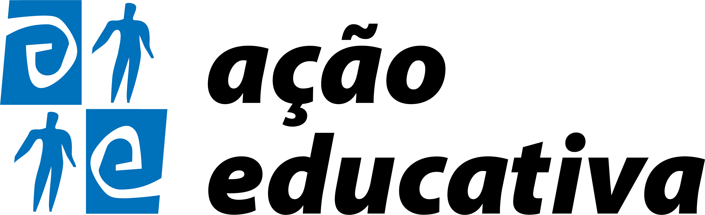

No eixo Fundamentos da EJA vamos conhecer os marcos constitutivos da educação de jovens e adultos, que ao longo da história brasileira recente foi muitas vezes identificada com campanhas de alfabetização, programas acelerados de elevação de escolaridade e exames de certificação de estudos básicos. Vamos também refletir sobre a educação como um direito que não cumpre apenas uma função reparadora, mas promove oportunidades de ampliação de conhecimentos, qualificação, manejo de novas tecnologias e fruição cultural ao longo da vida.
No eixo Diversidade, em que trabalhamos raça e gênero, reconhecemos a educação de jovens e adultos como um espaço de diferentes presenças, identidades e experiências. Vamos trabalhar o enfrentamento ao racismo, ao sexismo e à LGBTfobia para transformarmos a educação e as escolas em ambientes acolhedores, ricos em aprendizagens significativas. Para isso, apontamos possibilidades e propostas de trabalho com a EJA que consideram os conhecimentos e as culturas dos sujeitos como elementos potentes para propiciar novas construções, novos saberes.
A primeira questão a se considerar no trabalho com a EJA são os seus sujeitos, que não são crianças e, portanto, devem ter sua realidade considerada para a construção de um currículo que atenda às demandas e expectativas de seu público, levando em conta também sua história, sua experiência plural. Para contribuir com essa construção, o eixo Uma metodologia para os sujeitos da EJA traz um conjunto de reflexões e sugestões. Propomos também o trabalho com a leitura, indicando títulos e percursos voltados para os educandos da educação de jovens e adultos.
Neste eixo, consideramos o trabalho como um tema altamente relevante para pessoas que retornam à escola em programas de EJA. Muitos jovens e adultos costumam ter a expectativa de que a escola contribua de algum modo para sua formação profissional. Assim, é indispensável que o currículo da EJA assuma um compromisso com a educação profissional, contribuindo para a participação dos educandos no mundo do trabalho enquanto indivíduos que pretendem ampliar suas oportunidades e também a sua atuação como cidadãos na vida social.
Pensar a mobilidade urbana é pensar sobre o nosso modo de vida. Onde moramos? Por onde andamos? Como circulamos de um lugar para outro? São questões diretamente relacionadas ao contexto de vida dos estudantes jovens e adultos. Assim, propomos neste eixo uma reflexão contextualizada sobre as relações das pessoas com a cidade e com o território nas suas diferentes formas de ocupação. Trazemos também propostas didáticas para contribuir com essa compreensão e ajudar na formação de cidadãos e profissionais mais humanos, que utilizem o conhecimento obtido em prol do desenvolvimento pessoal e coletivo, como indissociáveis.
Iniciativa
Realização

Parceiros investidores